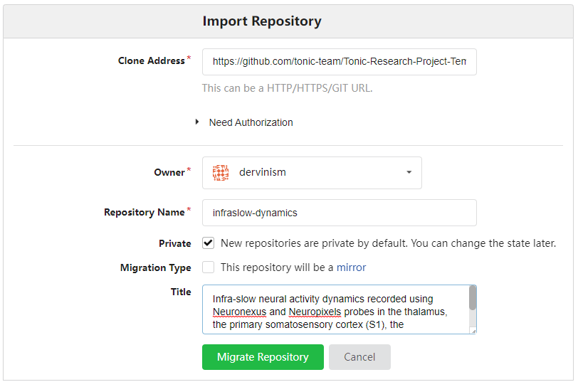

Bristol GIN for Silicon Probe Data
Contents
Bristol GIN for Silicon Probe Data#
Create Repository to Store Your Research Data#
The example repository is organised according to the Tonic Research Project Template. You can organise your data according to this template by following a few simple steps. First, go to your GIN web page (GIN-domain-name/your-username) and click on the Import Repository button.
{kind=link}
Figure 1. Import Repository
You should be brought to the Import Repository page. As a Clone Address specify the Tonic template github page: https://github.com/tonic-team/Tonic-Research-Project-Template. Give the name to your repository and a concise description of the kind of data stored in the repository. In my case I am creating a repository containing dual silicon probe recordings of spontaneous neural activity in various brain areas of the mouse. Then click the green Migrate Repository button.
{kind=link}
Figure 2. Describe Your New Repository
You should see the template contents cloned under your new repository name.
Now open the terminal and navigate to the folder on your local file system where you would like to keep your research data. Download the remote repository to that location by typing this command:
gin get dervinism/infraslow-dynamics
You can now use this empty repository to store all of your newly acquired research project data and documents. If you already have data that was generated in the past, you can copy it here.
Set up Your Research Data Repository#
I am going to copy old research data to this newly created repository and make certain rearrangements within the existing folder structure to make it more suitable for already existing data structures created while carrying out my research project. I am also going to use mock research data to reduce the size of the repository so that repository management actions can be performed fast for this tutorial. The mock data repository is available to download on GIN. You can download it by typing the line below in your terminal:
gin get dervinism/mock-ecephys-project
cd mock-ecephys-project
gin get-content
Once downloaded, open the repository and copy the contents of the repository except for the .git folder. Delete the contents of the infraslow-dynamics repository and paste the copied contents from the mock-ecephys-project repository. Edit the README file accordingly to reflect the new name of the repository and other info.
Record Your Local Research Data Repository Changes#
Once your repository is set up (data folders organised, data files placed in right locations, etc.), you should register the state of your repository with the local version control system. By doing so you create the image of your repository that can always be reverted to in the future in case the need to do so arises. When commiting local repository changes to your version control system you typically provide a concise message describing the changes. By convention, the message length should not exceed 50 characters. As for the first record, we type:
gin commit . -m "Initial commit"
This action would commit all changes locally. Dot means that the command is executed on the contents of the current working directory; therefore, make sure that you are inside the root folder of your repository when carrying out this action. The flag -m is used to pass the commit message. When you make new changes to the repository, whether editing text files or manipulating your data files, you should commit these changes periodically to your local versioning system by executing in the terminal a similar command:
gin commit . -m "A message describing new changes"
Update Your Remote Research Data Repository#
All of the changes that were commited previously, were done so locally. We were working on a local copy of our research data repository. In order to update our remote research data respository, whether residing on Bristol GIN or on the public GIN server, we need to push our local changes to the remote copy of our repository. We do so by simply executing the line below in the terminal:
gin upload .
Any new files and any new changes to exisiting files should now be uploaded onto the remote repository and we should be able to see them if we navigated to the repository web page. Alternatively, we can also update the remote repository using the web interface. We do so by navigating to the repository webpage and clicking the blue Upload file button.
{kind=link}
Figure 3. Update Remote Repository via Web
The limitation of using the web interface is that every time you update your remote repository, you will be limited to uploading 100 files at a time with each file being no larger than 10 gigabytes. Therefore, it is more effecient/effective to use the command line tools which have none of these limitations.
When you use the web interface, you can specify the commit message title (no more than 50 characters by convention) and the commit message body (no more than 72 characters by convention).
Remove Content of Your Local Research Data Repository#
One advantage of using GIN for your data repository mangement is that you do not need to keep duplicate repositories in order to prevent accidental detrimental changes to your main repository. One reason for that is having version control system. The other reason is that you can safely remove the content of your local repository and replace it with pointers to original files. As a result you can save space on your local hard-drive. To remove the local content type the following line in your commend terminal:
gin remove-content
Local files larger than 10 megabytes should be replaced by symbolic links. In case you want to remove the content of specific files only, you can type:
gin remove-content <absolute or relative path to file or folder>
For example, to remove the raw research data from our silicon probe recording repository, we type:
gin remove-content 03_data/001_uol_neuronexus_exp_raw_derived
gin remove-content 03_data/002_uol_neuropixels_exp_raw_derived
To simply restore the file content type in
gin get-content
If you no longer need to work on your repository and its remote copy is up to date with the local copy, you can simply delete the local repository copy altogether. You should always be able to restore your repository and all of its contents on your local machine by executing these commands in your terminal:
gin get dervinism/mock-ecephys-project
cd mock-ecephys-project
gin get-content